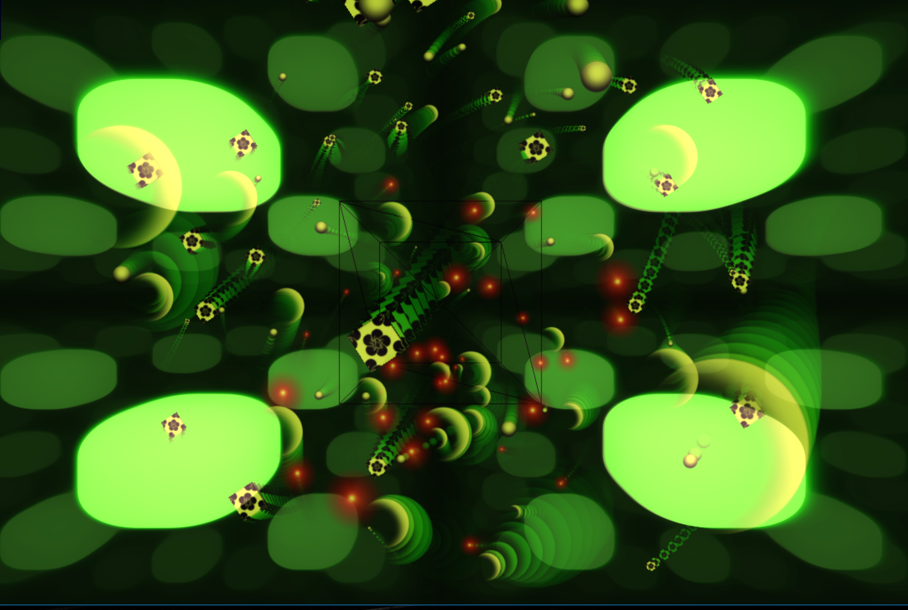

Cantor 3D fractal and navigation in and back
 animating recursive raymarch shapes and spriteclouds
 animating of infinite boolean raymarch shapes in zones
animating of infinite boolean raymarch shapes in zones